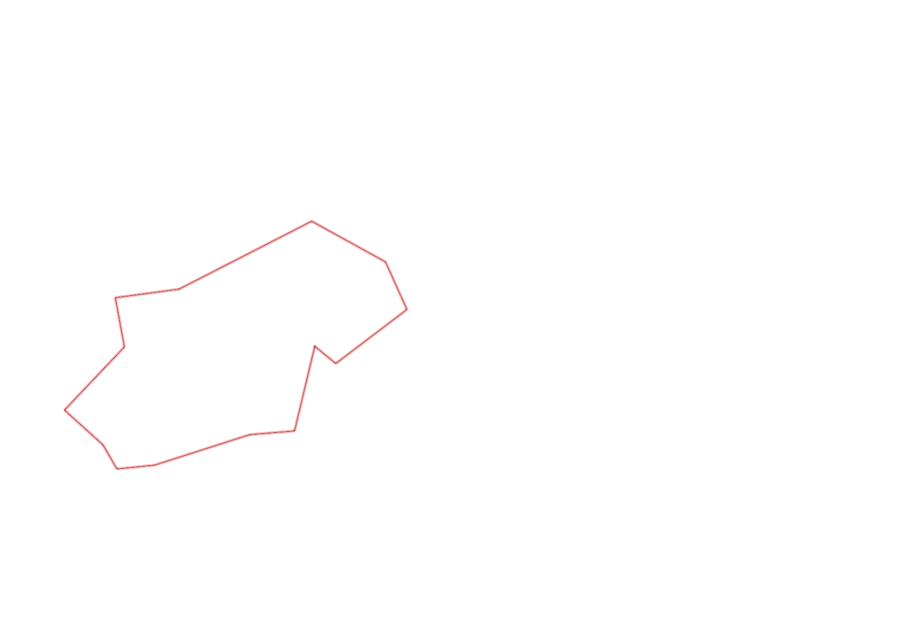
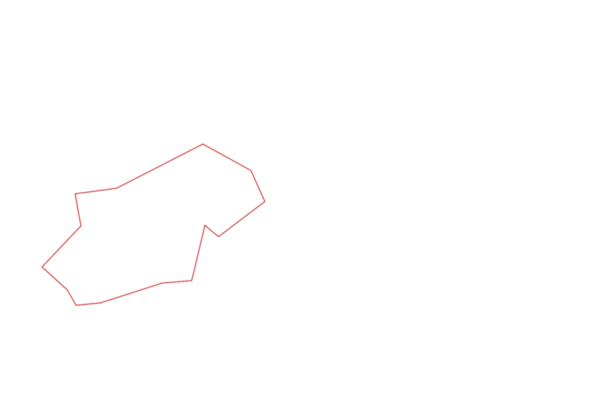

| Control |
Points |
Time Punched |
Distance |
Your Time |
Pace |
Place |
Fastest Time |
Median Time |
% Behind Fastest |
| 127 |
20 |
|
0.06 |
0:05:54 |
1:38:20 |
30 / 30 |
0:00:01 |
0:00:32 |
35300% |
| 92 |
90 |
|
0.21 |
0:17:43 |
1:24:21 |
6 / 6 |
0:02:15 |
0:04:11 |
687% |
| 57 |
50 |
|
0.12 |
0:05:37 |
46:48 |
5 / 9 |
0:01:59 |
0:05:37 |
183% |
| 107 |
100 |
|
0.2 |
0:02:31 |
12:35 |
9 / 21 |
0:00:00 |
0:02:52 |
-% |
| 63 |
60 |
|
0.35 |
0:04:08 |
11:48 |
15 / 18 |
0:01:59 |
0:02:42 |
108% |
| 32 |
30 |
|
0.15 |
0:01:05 |
07:13 |
16 / 27 |
0:00:36 |
0:00:56 |
80% |
| 44 |
40 |
|
0.12 |
0:02:13 |
18:28 |
22 / 29 |
0:00:52 |
0:01:49 |
155% |
| 53 |
50 |
|
0.2 |
0:05:51 |
29:15 |
26 / 26 |
0:01:31 |
0:02:15 |
285% |
| 69 |
60 |
|
0.12 |
0:01:40 |
13:53 |
23 / 29 |
0:00:45 |
0:01:18 |
122% |
| 71 |
70 |
|
0.06 |
0:01:42 |
28:20 |
18 / 25 |
0:00:48 |
0:01:13 |
112% |
| 41 |
40 |
|
0.09 |
0:02:02 |
22:35 |
8 / 8 |
0:00:47 |
0:01:39 |
159% |
| 60 |
60 |
|
0.23 |
0:02:02 |
08:50 |
2 / 4 |
0:01:55 |
0:02:33 |
6% |
| 38 |
30 |
|
0.11 |
0:03:26 |
31:12 |
14 / 15 |
0:00:00 |
0:01:15 |
-% |
| Finish |
0 |
|
0.2 |
0:01:33 |
07:45 |
5 / 10 |
-1 day, 23:07:29 |
0:01:37 |
-99% |
Total Distance Covered: 2.22km
Points Scored: 700
Late Penalty: 0
Final Score: 700
Total Time: 0hours 57minutes 27seconds
Efficiency: 315.32 points/km
 
